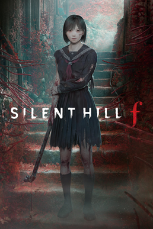

this is my favorite movie Kamikaze Girls!
Welcome!!
Welcome to my site! My name is Binc and I have a lot of dumb interests and not many outlets to express my love for them so I want to share my love for all the things I like!
MUSIC
MUSIC I LIKE
I like a lot of varying genres of music but lately I've been listening to a lot of Visual Kei, J-pop, rock, metal, and more! I listen to anything that's interesting, unique and authentic! I love all genres and listen to everything! I will listen to everything ever made!!
This is a song by the Japanese Visual Kei band, "BUCK-TICK," which is a band that has been active since 1983. They are one of the pioneers of the Visual Kei subculture, and one of my favorite bands ever!
next band
GAMES
GAMES I LIKE
This is the game I've played the most recently.

This is Silent Hill F, which is the most recently added game to the series. It's awesome and very feminist and really well made! It's my first exposure to the series and I'm having a lot of fun with it. I love every aspect of horror and this game has everything I enjoy!
MOVIES
MOVIES I LIKEEEEEEEEEEE